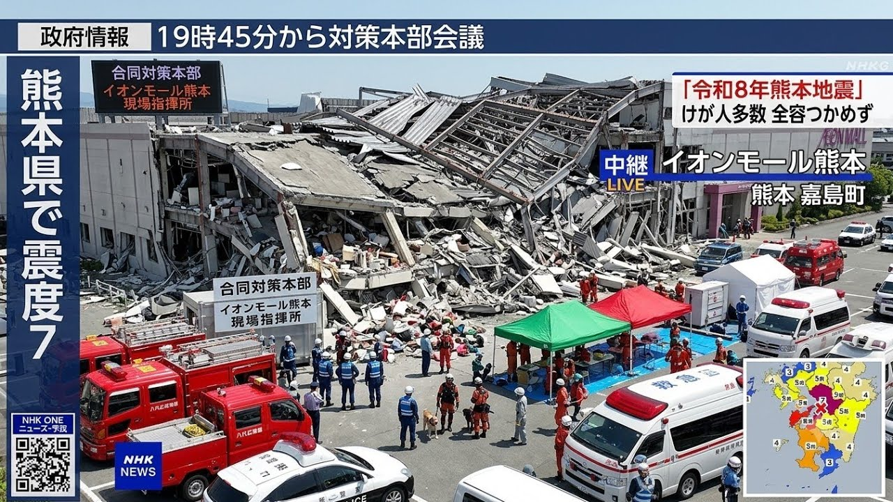

災害時のデマ・偽情報とどう向き合うか — AI生成偽画像を実例に解説
はじめに
2026年7月28日に令和8年熊本地震が発生してから、SNS上では被災地に関する 様々な情報が飛び交いました。その中には事実に基づかないデマや、 AIによって生成された偽画像も多数含まれており、 それらが次々と拡散されていく様子が見受けられました。
情報は時として、物資や救助と同じくらい人命に関わります。 誤った情報が広まることで避難行動が妨げられたり、 救助の妨げになったりすることがあります。 この記事では、実際に拡散されたAI生成の偽画像を例に挙げながら、 偽情報の見分け方とメディアリテラシーについて解説します。
これが実際に拡散された偽画像です
以下の画像は、令和8年熊本地震の発生後にSNS上で拡散された画像です。 一見するとNHKの報道映像のように見えますが、 これはAIによって生成された偽画像です。 NHKが実際に放送した映像ではありません。

では、この画像のどこがおかしいのかを細かく見ていきましょう。
どこがおかしいのか — 偽物の見分け方
細かく見ていくと、不自然な点がいくつも見つかります。 AI生成画像は一見精巧に見えても、細部に必ずと言っていいほど破綻が現れます。
① 文字・フォントの不自然さ
AI生成画像が最も苦手とするのが「文字」です。この画像でも複数箇所に文字の破綻が見られます。
- 「令和8年熊本地震」の「震」の文字 — よく見ると字が崩れており、 正しい漢字として成立していません。
- 「NHK ONE ニュース防災」の「防災」 — 左下のバーコード付近の文字が 不自然に歪んでいます。
- 全体的なフォント — NHKが実際に使用しているフォントと 微妙に異なる箇所が随所に見られます。
② NHKのL字画面レイアウトの不自然さ
実際のNHKのL字テロップと比較すると、文字の配置・サイズ・色使いに違和感があります。 本物のNHKニュース映像と並べて見れば、その差はより明らかです。 普段からニュース番組の画面レイアウトに慣れ親しんでいると、 こうした違和感に気づきやすくなります。
③ 合同対策本部の看板・建物の不自然さ
画面中央に「合同対策本部 イオンモール熊本 現場指揮所」と書かれた看板が 2か所に見えますが、文字の配置や看板自体の形状が不自然です。 また、倒壊した建物の崩れ方が物理的に不自然で、 本物の建物が崩壊した際に生じるような瓦礫の散らばり方とは異なります。 AIは物理法則を理解していないため、こうした不自然さが生まれます。
④ 救急車のタイヤの位置
手前に写っている救急車のタイヤの位置が不自然です。 AIは車両の構造を正確に再現することが苦手なため、 タイヤの位置・角度・影の方向などに歪みが生じやすい傾向があります。 車や建物など、構造が明確なものほどAI画像の破綻が出やすいです。
⑤ 震度分布図の不自然さ
右下に表示されている震度分布図が、実際の令和8年熊本地震の震度分布と異なります。 また、NHKが実際に使用している震度分布図とはデザイン・配色・凡例の形式が 全体的に異なります。気象庁の公式サイトと比較することで、 すぐに偽物だと判断できます。
なぜデマは広がるのか
デマや偽情報が広まりやすい背景には、いくつかの要因があります。
- 不安と恐怖 — 災害時は正確な情報が乏しく、 人は少しでも多くの情報を求めようとします。 その心理につけ込む形でデマが広まります。
- 善意による拡散 — 「早く伝えなきゃ」「誰かの役に立ちたい」 という善意が、確認不十分なまま拡散につながることがあります。
- SNSのアルゴリズム — 感情を刺激する投稿ほど 拡散されやすい仕組みになっており、 衝撃的な偽画像はその格好の対象になります。
- AIの進化 — 近年のAI技術の発展により、 本物と見分けがつきにくい偽画像・偽動画を 誰でも簡単に生成できるようになっています。
正しい情報の見分け方
では、どうすれば偽情報を見抜けるのでしょうか。以下の点を意識してみてください。
- 発信元を確認する — 気象庁・自治体・NHK等の公式アカウントからの 情報かどうかを必ず確認しましょう。
- 画像の真偽を確認する — Googleの画像検索や TinEyeを使って、その画像が以前から存在するものでないか調べましょう。
- 細部をよく見る — 今回解説したように、 文字・影・タイヤ・建物の崩れ方など細部に不自然な点がないか確認しましょう。
- 「〇〇らしい」は疑う — 伝聞情報・匿名情報は 特に注意が必要です。出所不明の情報は基本的に信頼しないようにしましょう。
- 拡散する前に一度立ち止まる — 「本当に正しい情報か？」と 一呼吸おく習慣を持ちましょう。
- ファクトチェックサイトを活用する — InFactや ファクトチェック・イニシアティブ（FIJ） などのサイトが情報の真偽を検証しています。
おわりに
今回紹介した偽画像は、一見すると本物のニュース映像のように見えます。 しかし細部をよく見ると、文字の崩れ・建物の不自然な崩壊・タイヤの位置・ 震度分布図の相違など、さまざまな破綻が見つかりました。
大切なのは、「少しでもおかしいと感じたら、すぐに拡散しない」ことです。 善意で情報を広めようとした結果、デマの拡散に加担してしまうことは誰にでも起こりえます。
災害時こそ、気象庁・自治体・NHK等の公式情報を第一の情報源にしてください。 そして、SNSで見かけた情報を拡散する前に、一度立ち止まって確認する習慣を持ってほしいと思います。 一人ひとりのその行動が、被災地の混乱を防ぐことにつながります。